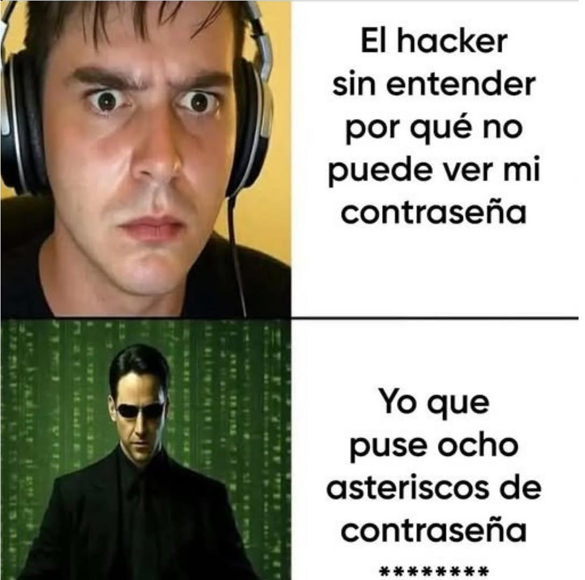

ÍNDICE PRINCIPAL
Invitación
¿Por qué te invito?
¿Qué puedes aprender?
¿Qué me gusta del ETE?
Retos y Superación
Estrategias de Inscripción
Evitar Deserción
Arrastrar el mouse para abrir el índice →
¡Infórmate sobre la opción a la que pocos se atreven!
¡Infórmate sobre la opción a la que pocos se atreven!
¿Te interesan las computadoras y siempre te piden ayuda para conectar el internet?
¡Entonces esta ETE es para ti!
